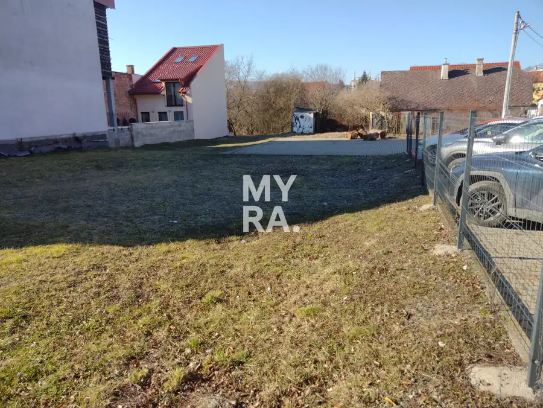
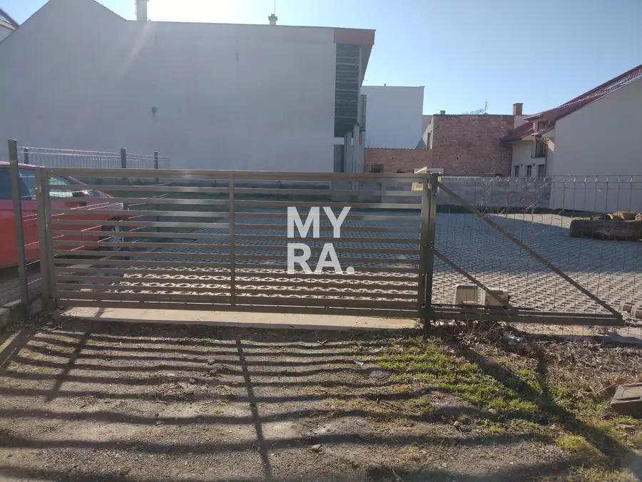
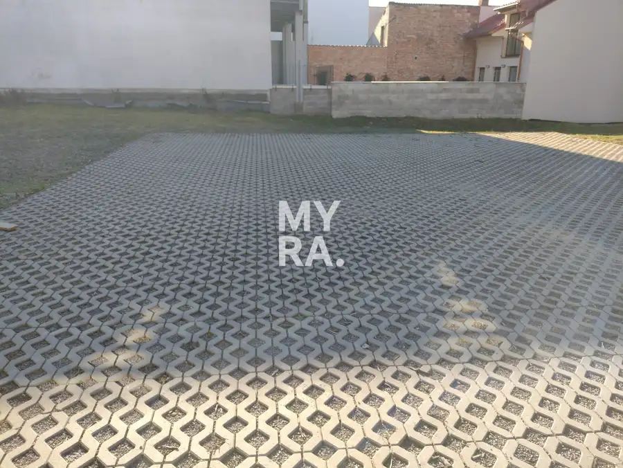
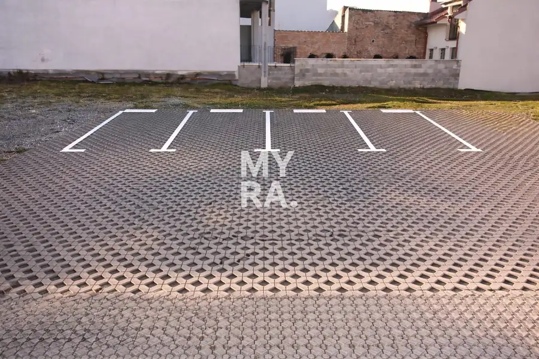
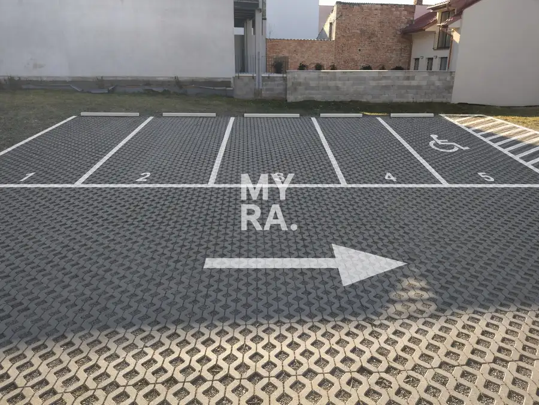
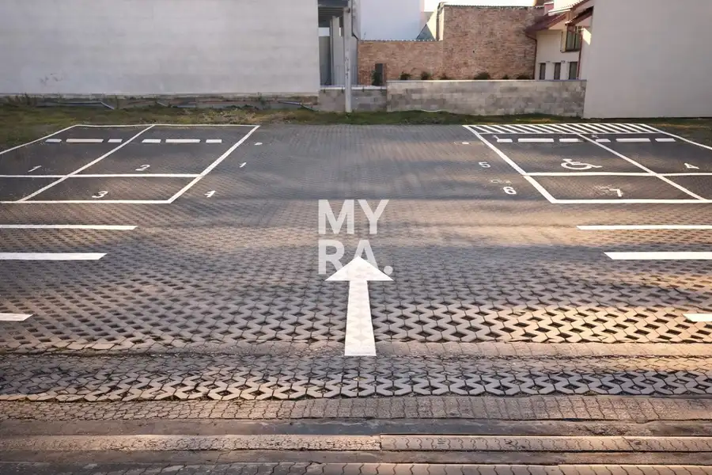
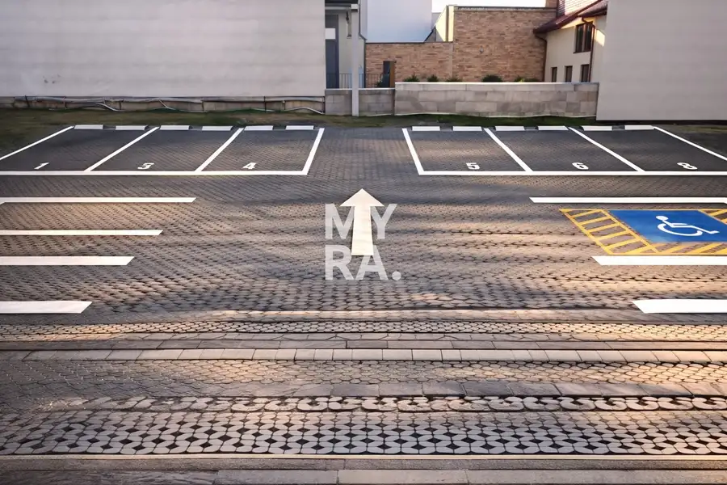

Prenájom · Komerčné priestory
Prenájom parkovacích miest – Jarková ulica, Prešov
Prešov
Cena na vyžádání







- Plocha12.5 m²
- StavKompletná rekonštrukcia
- VlastníctvoOsobné
O nehnuteľnosti
Ponúkame na prenájom 8 parkovacích miest na Jarkovej ulici v Prešove, v lokalite s výrazným nedostatkom parkovacích kapacít.Parkovacie miesta sa nachádzajú na oplotenom pozemku v súkromnom vlastníctve, čo zaručuje bezpečné a bezproblémové parkovanie. Povrch je upravený kvalitnou zámkovou dlažbou.Vstup na pozemok je zabezpečený automaticky otváracou bránou, čo poskytuje komfort aj vyššiu úroveň bezpečnosti.Možnosť krátkodobého aj dlhodobého prenájmu.Cena prenájmu: 60 € / mesiac za jedno parkovacie miestoV prípade záujmu nás neváhajte kontaktovať pre viac informácií.Maroš Matej - MYRA.+421 917 634 313maros.matej@myrapoint.skwww.myrapoint.sk
Parametre
- Druh
- Garáž
- Dátum zverejnenia
- 02. 03. 2026
- Stav nehnuteľnosti
- Kompletná rekonštrukcia
- Typ
- Prenájom
- Vlastníctvo
- Osobné
- Úžitková plocha
- 12.5 m²
Kde to je


Ďalšie ponuky
Celá ponuka